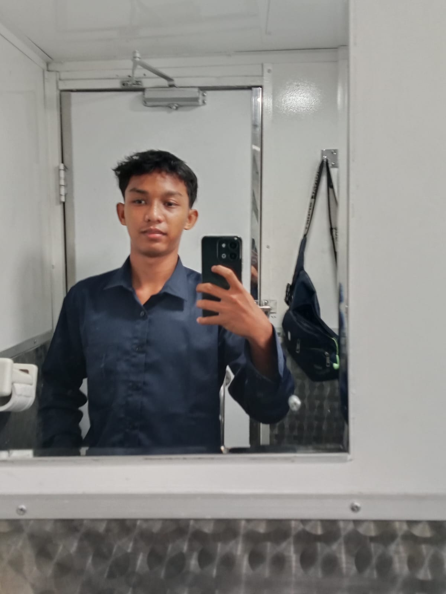

Sistem Informasi Jaringan dan Aplikasi. Saya adalah seseorang yang antusias dengan teknologi dan cloud computing.
Hubungi Saya
Halo! Saya Budi Santoso, seorang siswa yang sedang mendalami dunia pemrograman. Saya senang memecahkan masalah melalui kode dan terus belajar teknologi baru setiap harinya. Selain ngoding, saya juga memiliki beberapa hobi.
2026 - 2028 | Sistem Informasi Jaringan dan Apliaksi
2022 - 2025 | Siswa Bilingual class
Membuat aplikasi kasir berbasis web menggunakan PHP dan MySQL untuk tugas akhir semester.
Mendesain dan mendevelop landing page interaktif menggunakan HTML, CSS, dan JavaScript murni.
email: ramarisky.277@gmail.com